대본보다 중요한 것이 썸네일을 잘 만드는 것입니다. 아무리 대본을 잘 쓰고 영상을 잘 만들었더라도 시청자들이 클릭하지 않으면 아무 소용이 없습니다. 썸네일 만드는 것에 충분한 시간을 투자하시기 바랍니다.
유튜브를 잘하는 것은 벤치마킹을 잘하는 것이라고 말씀드린 바 있습니다. 벤치마킹한 영상의 썸네일을 철저하게 분석해서 비슷하게 만드는 것이 채널을 빠르게 키울 수 있는 가장 빠른 방법입니다. 썸네일은 저작권이 없기 때문에 비슷하게 만들어도 됩니다.
1. 벤치마킹 영상 썸네일 다운로드
벤치마킹한 영상을 클릭합니다. VidIQ가 설치되어 있다면 오른쪽에 아래와 같은 분석 창이 나타납니다. Views를 클릭하면 해당 영상의 썸네일을 다운로드할 수 있습니다.
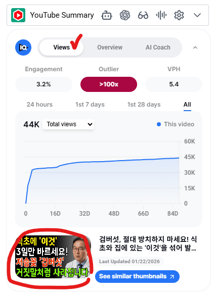
Download Thumbnail을 클릭해서 썸네일을 다운로드합니다.
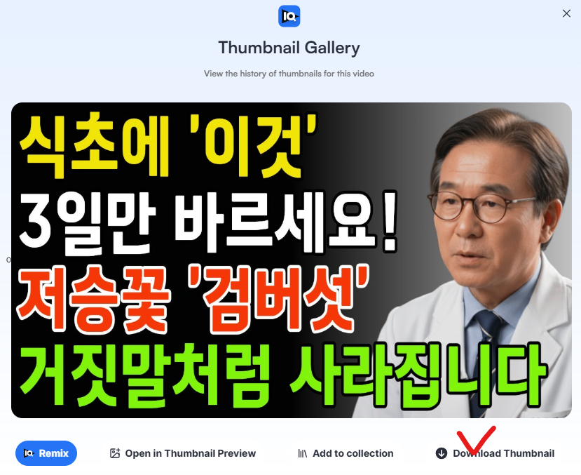
2. 미리캔버스 접속
미리캔버스 바로가기 →미리캔버스에 접속해서 로그인합니다. 오른쪽 상단의 디자인 만들기를 클릭합니다.
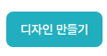
상단 가운데에서 픽셀 선택 → 웹 → 유튜브 → 썸네일을 클릭합니다.
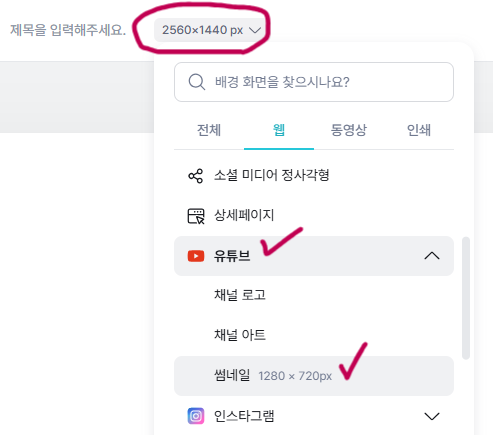
3. 배경 설정
건강 채널 썸네일은 보통 검은 배경 + 썸네일 문구 4~5줄 + 아바타 이미지 구성이 많습니다. 다운로드한 벤치마킹 썸네일을 보면서 비슷하게 만들어보세요.
먼저 배경색을 변경합니다. 하단의 흰색으로 되어있는 부분을 클릭해서 검은색 또는 벤치마킹한 썸네일의 배경 색상으로 변경합니다.
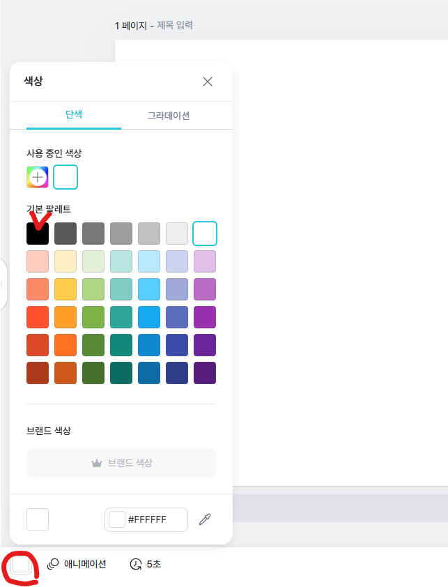
4. 아바타 이미지 삽입
HeyGen에서 아바타로 사용했던 이미지를 넣겠습니다. 왼쪽의 업로드 → 업로드를 눌러서 이미지를 가져오거나, 이미지를 드래그해서 화면에 넣어줍니다.
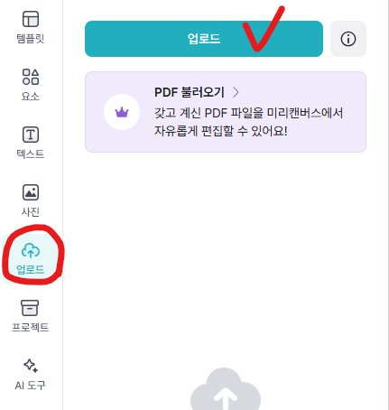
이미지를 클릭하면 검은색 배경에 이미지가 들어간 것을 볼 수 있습니다.
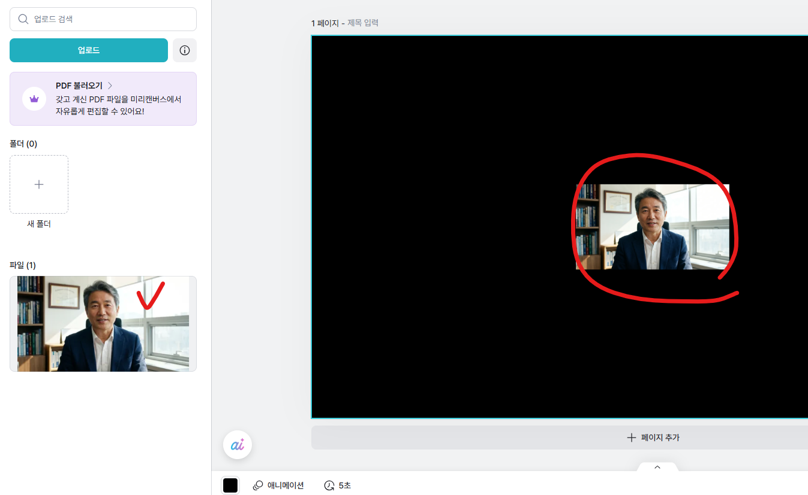
5. 배경 제거
이미지를 클릭한 후 배경 제거를 클릭합니다.
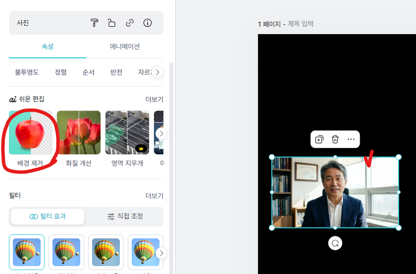
배경이 지워진 것을 확인할 수 있습니다. 모서리를 클릭한 채 드래그해서 이미지 크기를 키우고 오른쪽으로 위치를 조정합니다.
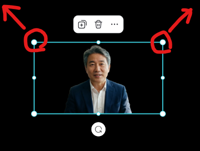
아래와 같이 나왔으면 완성입니다.
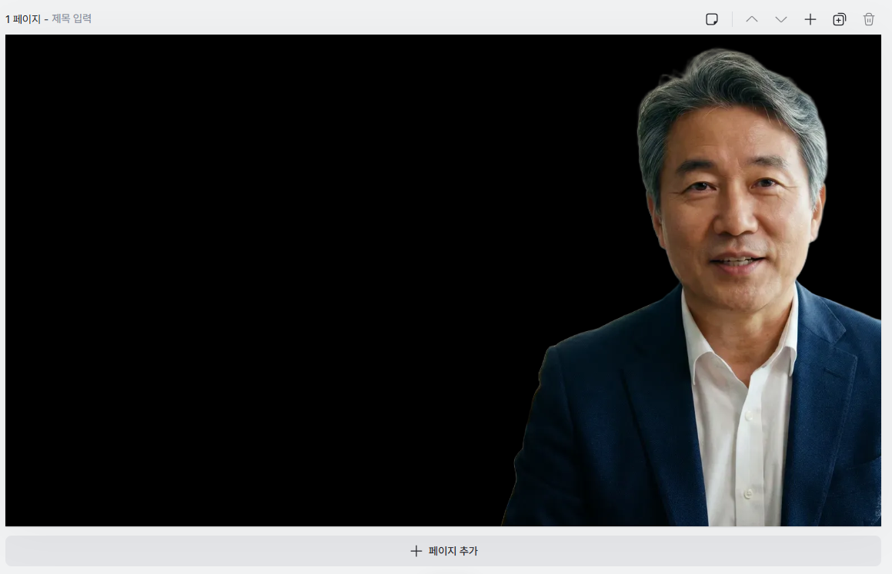
6. 썸네일 문구 입력
왼쪽 메뉴의 텍스트 → 제목 텍스트 추가를 클릭합니다.
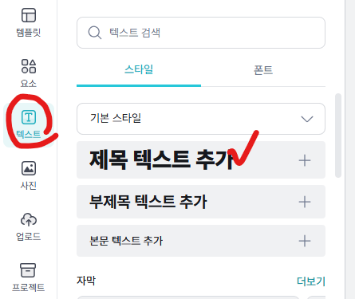
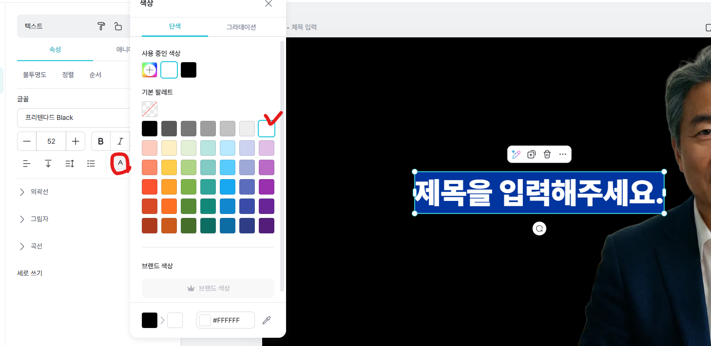
다운로드한 벤치마킹 썸네일을 보면서 글씨 색상과 멘트를 비슷하게 만들어줍니다. 핵심 키워드 이외의 것들을 바꿔주시면 됩니다. (저는 이 썸네일을 벤치마킹해보겠습니다.)
썸네일 문구를 정하셨다면 미리캔버스 텍스트에 입력합니다. 줄 바꾸기는 엔터를 눌러주세요.
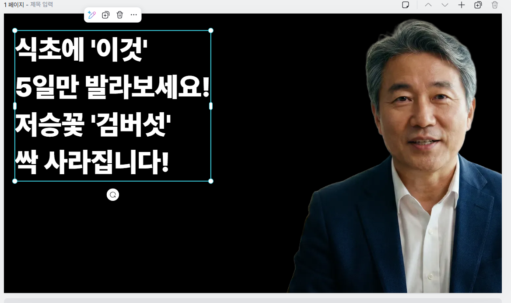
7. 텍스트 색상 변경
변경하고 싶은 줄의 텍스트를 드래그한 후 왼쪽의 색상 → + 버튼을 클릭합니다.
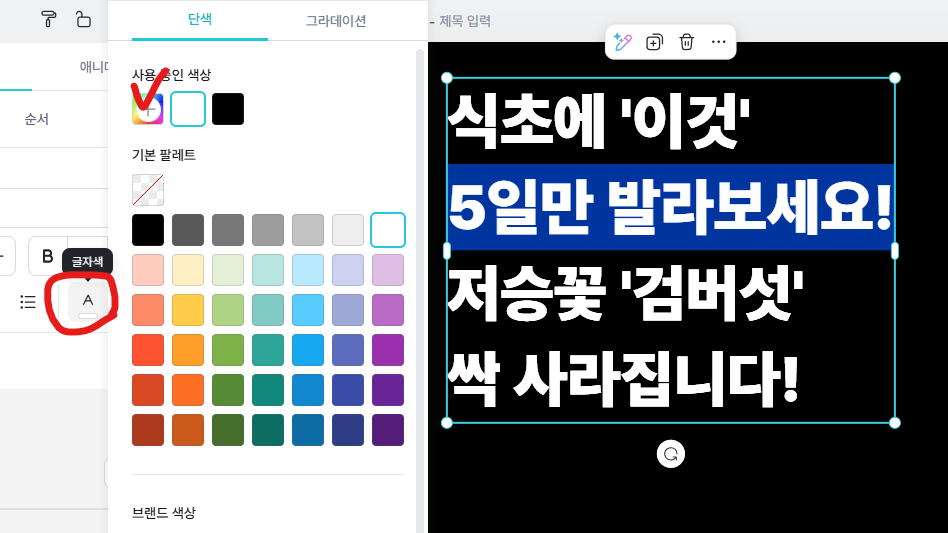
벤치마킹한 영상과 비슷한 색상을 선택합니다.
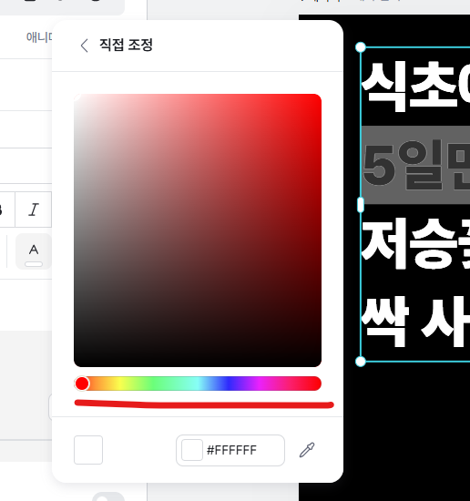
각 줄에 맞는 텍스트 색상을 변경해줍니다.
8. 텍스트 크기 및 스타일 조정
색상 변경이 완료되면 텍스트를 클릭한 후 모서리를 드래그해서 화면에 꽉 차게 크기를 늘려줍니다.
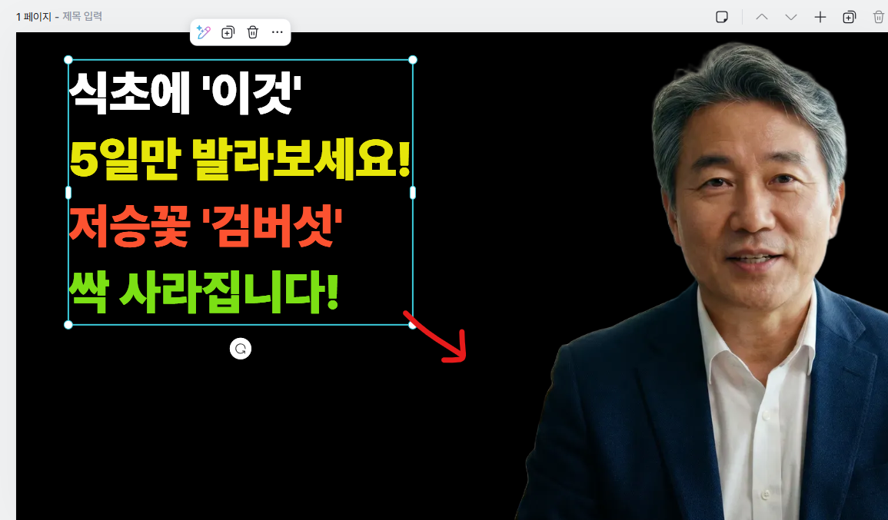
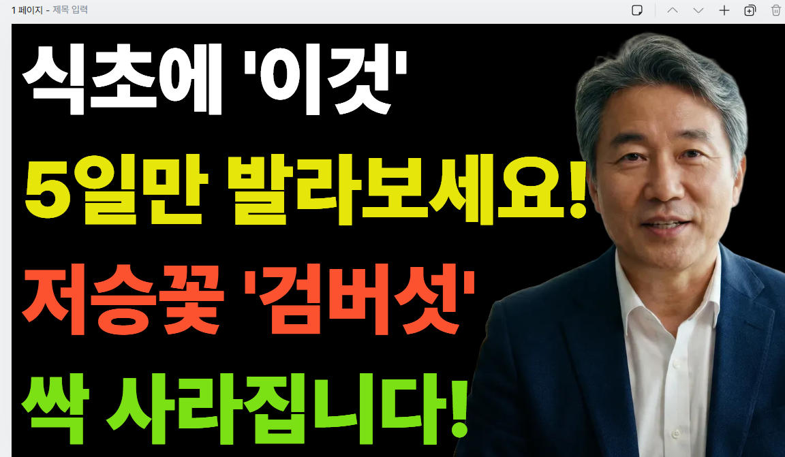
글자 조정을 선택하면 자간, 행간, 장평을 조절할 수 있습니다.
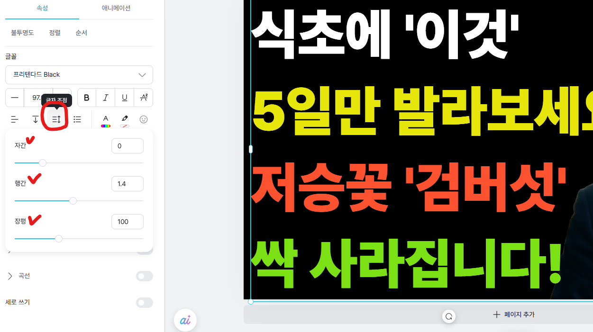
- 자간: -1~0
- 행간: 1.2
- 장평: 80~100
조정 후 다시 화면에 꽉 채워지게 텍스트 크기를 키워줍니다.
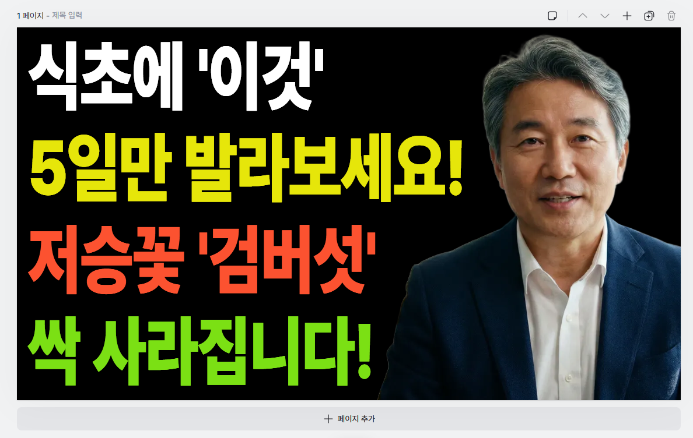
9. 외곽선 및 글꼴 설정
외곽선 설정
텍스트를 클릭한 후 외곽선 → 두께를 변경하면 텍스트가 더 선명하게 보입니다.
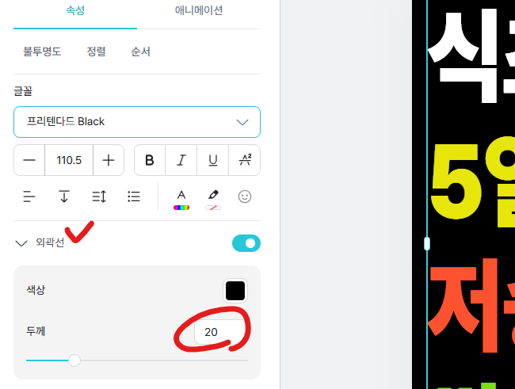
글꼴 변경
텍스트 클릭 후 글꼴에서 원하는 글꼴로 변경합니다.
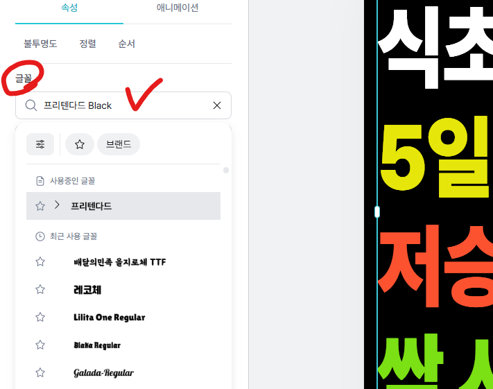
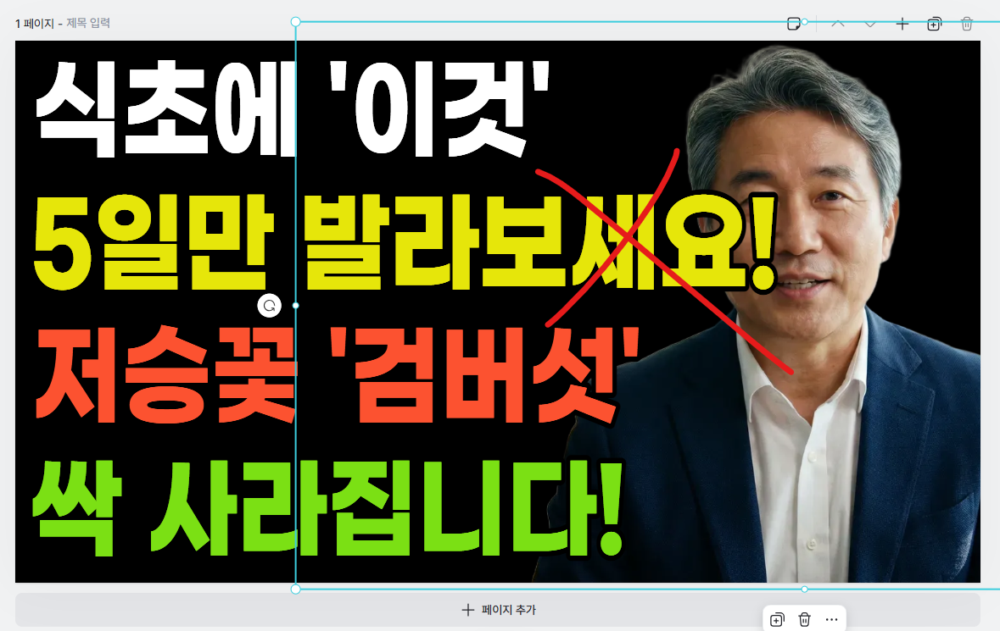
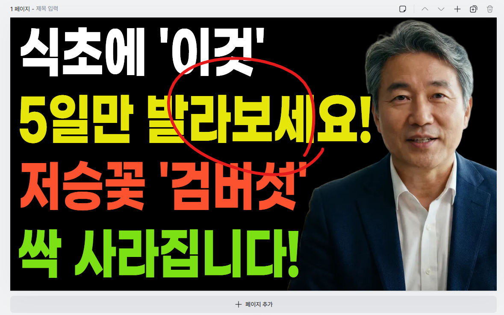
10. 다운로드
완성되었다면 오른쪽 상단의 다운로드를 클릭합니다. 파일 형식을 PNG로 확인한 후 고해상도 다운로드를 클릭해서 저장합니다.
마무리
이렇게 썸네일을 만들어봤습니다. 고급스럽게 만들 필요는 없습니다. 얼마나 벤치마킹한 영상과 비슷하게 만드느냐가 가장 중요합니다. 벤치마킹한 썸네일은 이미 사람들이 많이 클릭한 썸네일입니다. 최대한 비슷하게 만들기 위해 많이 연습해보시기 바랍니다.